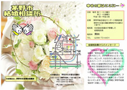

茅野市社会福祉協議会では、昭和41年より結婚相談所を開設しております。茅野市結婚相談所では単に、「誰かと結婚できればいい」ではなく、相談員とお話をしていだいただく中で、ご自分の『魅力』を発見していただき、良き出会いの結果がその後のお二人の素敵な人生となっていくことをお手伝いします。
“素敵な出会い”を探しに出かけてみてはいかがでしょうか。
相談日時
結婚相談日時
毎月第1・第3土曜日
午後1時〜午後4時
毎月第2・第4金曜日
午後6時30分〜午後8時30分
会場
茅野市総合福祉センター3階 第4会議室
（茅野市社会福祉協議会事務局がある建物の3階）
相談員
社会福祉協議会が委嘱した結婚相談員
登録・相談料
無料 ※但し、お見合い時のお茶代などその他の諸費用は自己負担となります。
相談内容
結婚に関する相談
結婚を希望されるかた同士の出会い、相手探しのお手伝い。
出会い・交際のまでの手順は、結婚相談所リーフットをご覧ください。
リーフレットはこちら
申込み方法
相談日に、来所していただき登録票（申込書）に、必要事項を記入してください。
その際、６ヶ月以内に撮影をしたご自身の全身が写っている写真を持参してください。申し込み時に写真を持参できない場合には、後日、事務局宛てに写真をご郵送ください。
利用上の約束ごと
申込み、相談にはご本人がお越しください。
※ご家族等本人以外の方がお越しいだいた場合は、ご相談のみで、登録者名簿の覧欄ができない場合もございますので、ご了承ください。
登録していただいた申込用紙の保管期間は３年間です。登録された後、ご成婚された方は、事務局までご連絡ください。
登録者名簿および申込用紙を閲覧される際には、既登録者の知り得た個人情報については、秘密保持に努めていただきますよう、ご協力をお願いいたします。
登録者同士の連絡調整は、相談員が行ないます。既登録者のお名前や連絡先を控えることは、ご遠慮いただいております。
3と4の事項が守られない場合には、登録を解除させていただくこともありますので、ご了承ください。
登録をしたからといって、結婚が決まるというものではありません。実際に相談所へお越しいただくことで多くの出会いのチャンスが生まれますので、ぜひ相談所へお越しください。

426KB
茅野市結婚相談所のリーフレット
お問い合わせ先
茅野市社会福祉協議会
茅野市塚原2-5-45
電話番号 0266-73-4431
Copyright (C) 2007 茅野市社会福祉協議会 Secretariat All Rights Reserved.